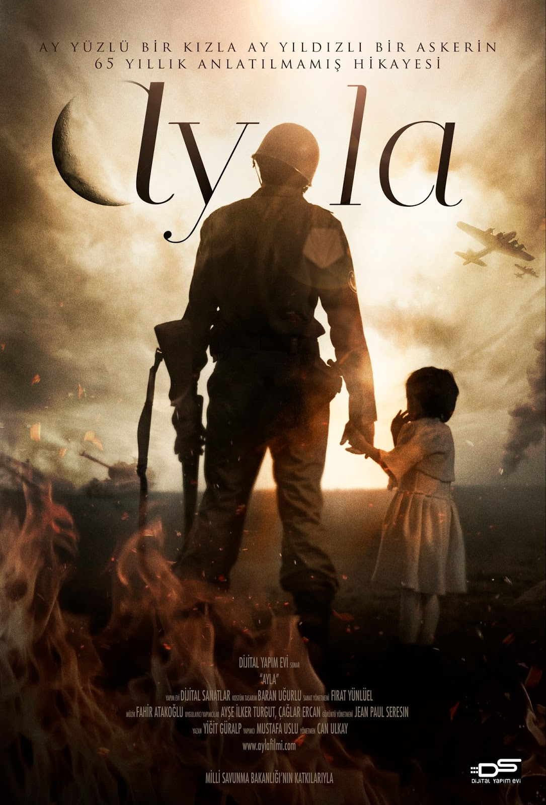

THE DOMESTIC BIOGRAPHY MOVIES THAT I RECOMMEND TO YOU
Bergen(2022)
In the film, which tells about the life of Bergen, one of the unforgettable female voices of Arabesque, Belgin, known as Bergen, tells the story of Ankara to Adana and from there to eternity after the love she experienced.
Stars: Farah Zeynep Abdullah / Bergen ---Ahmet Kayakesen / Abdullah ---Tilbe Saran / Bergen’in Annesi --- Erdal Beşikçioğlu / Bergen’in Babası
IMDB Rating: 7.1/10

Ayla(2017)
The film will bring to the screen a real and very dramatic story that happened in the Korean War. in 1950, a non-commissioned officer Suleiman, who took part in the war, finds a little girl on the battlefield. this 5-year-old Korean girl is an orphan and does not know where to go. The petty officer takes the girl with him and names her Ayla. Ayla and the petty officer, who have become like father and daughter. However, at the end of 15 months, the union will make a decision to return to Turkey. Suleyman Midshipman, who does not want to leave Ayla and return, tries every way, but he cannot cross the Korean laws.
Stars: İsmail Hacıoğlu / Süleyman --- Kim Seol / Ayla --- Lee Kyung Jin / Ayla --- Ali Atay / Ali
IMDB Rating: 8.3/10
Müslüm(2018)
Müslüm brings the life story of Müslüm Gürses, the legendary name of arabesque music, to the white curtain. The film tells about the life of the unforgettable sound artist full of ups and downs, focuses on the music of Müslüm Gürses, who influenced millions, the people who influenced his life in the time from childhood to his death, his wife Muhterem Nur, whom he expressed his love very much at every opportunity.